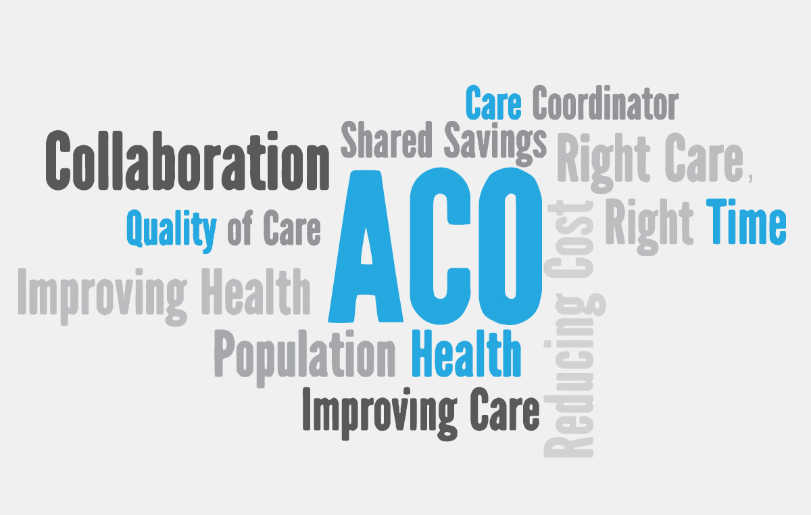
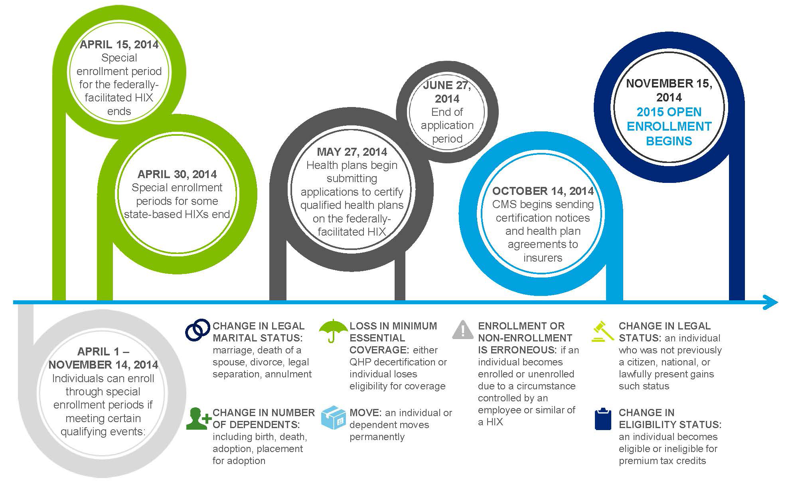

Who We Are
What We Do
Accountable care organizations are very similar to HMOs from 1970. Much like the HMOs were health maintenance organizations, ACOs are organizations that will be held accountable for providing health services to a defined population. ACOs are composed of doctors, hospitals, and other health care providers, who come together voluntarily to give high quality care to their Medicare patients. The goal of coordinated care is to ensure that patients, especially those with chronic illness, get the right treatment and the right time while avoiding unnecessary duplication of services from medical errors. One of their main goals is to reduce the cost of care and overall expenditures
Why Should You Support ACOs?
The Help ACOs Can Provide
Accountable Care Organizations are a way to help fix an inefficient payment system that gives more to those who provide more rather than better care.
The Affordable Care Act will be beneficial to those from lower classes by potentially decreasing the cost of care and by thereby making it much easier for them to attain it.
By providing better care, it is likely that the cost of the care will go down as well resulting in a decrease in money spent on care by families of the United States of America.
Where Are We Now?
The Dates to Remember
The Purpose
The People Behind This Project
This website was designed and created to raise awarness for Accountable Care Organizations as a part of the Affordable Care Act. It was made possible through the work of Rohan Sinha, a student at Wayzata High School, for his senior project. Through his dedication and hard work on this issue he has even found the best resource allocation for Acountable Care Organizations using data mining techniques on health care data along with heavily researching the social dynamic and aspect of the issue through his work on his high school senior project.
Work With Us
Contact Legislature
Minnesota House of Representatives
651-296-2144
Minnesota
State Senate
651-296-0504